🫰 Мой пример. Приложению для семейного бюджета не хватало нужных мне функций. Мы с Claude собрали своё — на подписке Claude Pro, без доплат.
🤫 И эту инструкцию тоже собрал Claude по моим указаниям.
Два тарифа настройки
Базовая — Claude с руками на твоём сервере. Профи — работает как сотрудник
🫵 Claude Code на твоём сервере: защищён, настроен и сразу готов к работе. Уходишь с работающим Claude и инструкцией.
❗️ Важно до старта
Подписка Claude у тебя уже должна быть оплачена.
Нет подписки — помогу оформить и оплатить из России. Это отдельная услуга: зарубежная карта и оплата занимают у меня много времени, поэтому в 1 500 ₽ не входят.
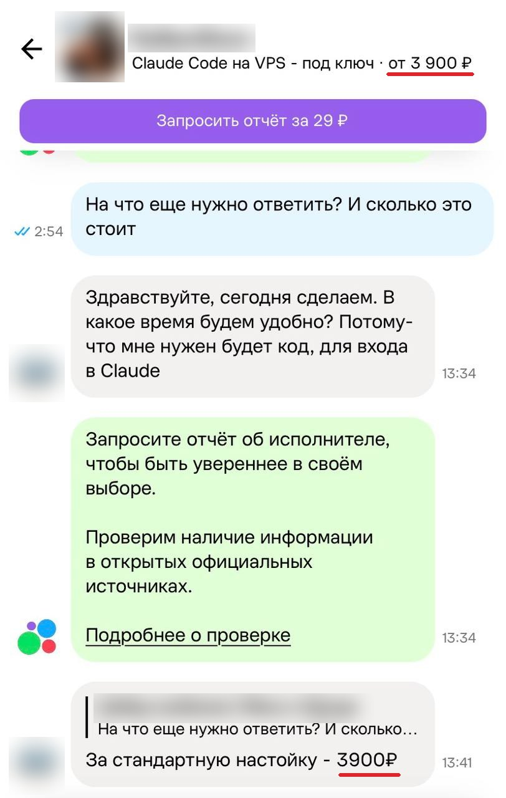
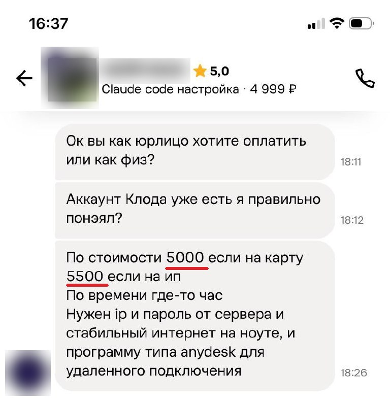
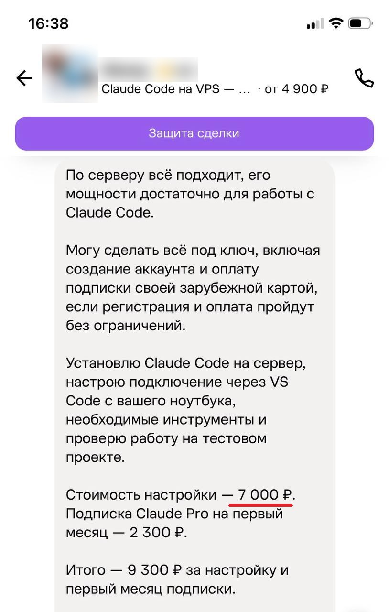
Ответы исполнителей на Авито за базовую настройку. Имена скрыл.
Что входит
Скриншоты ниже — с моего сервера и из моего настоящего скрипта.
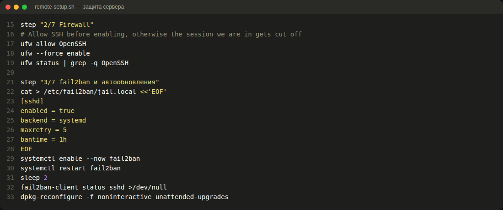
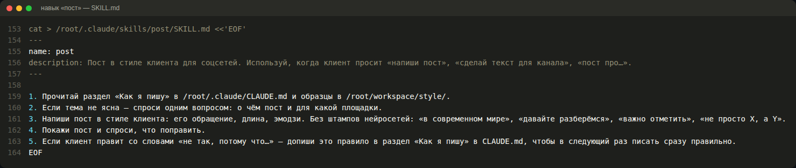
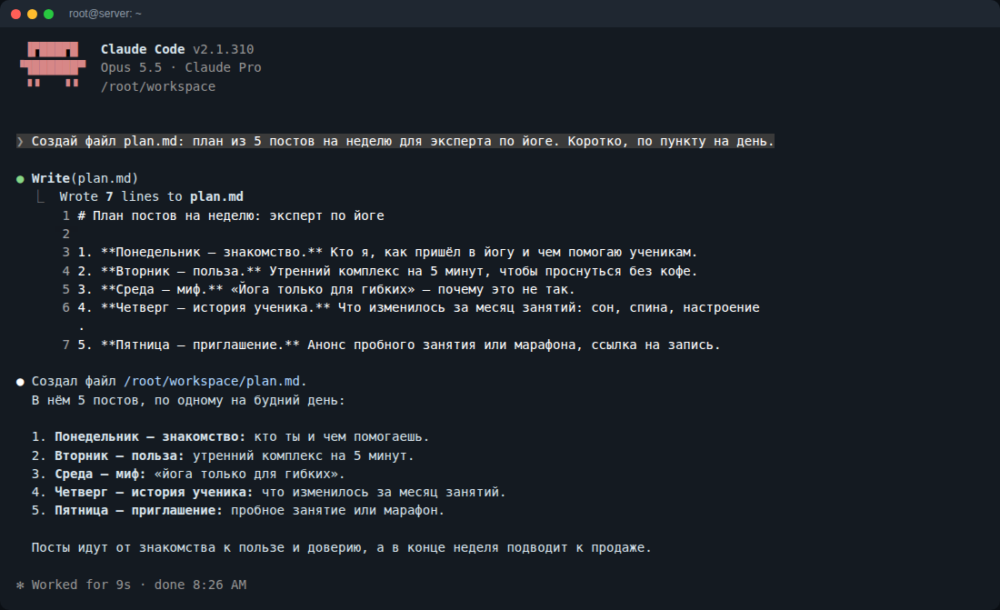
❗️ Подписку Claude и сервер ты оплачиваешь сам. Что сделать с твоей стороны — по шагам в инструкции.
Напиши мне в Telegram слово БАЗОВАЯ →
Сравнение
🫵 Базовая настройка — Claude отвечает на вопросы. Профессиональная — он работает сам. Скриншоты ниже — с моего сервера.
Что входит
Всё это уже работает у меня. Сделаю так же, только под тебя и твой бизнес.
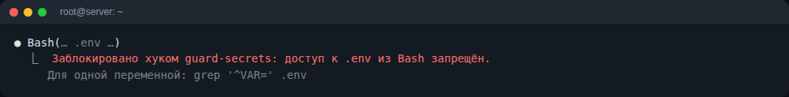
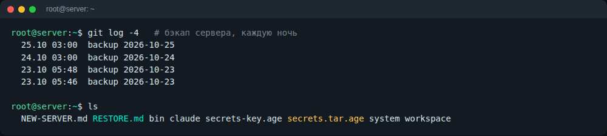
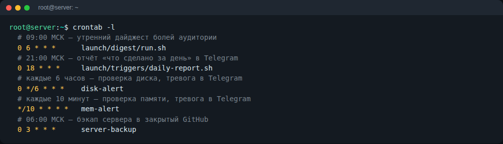
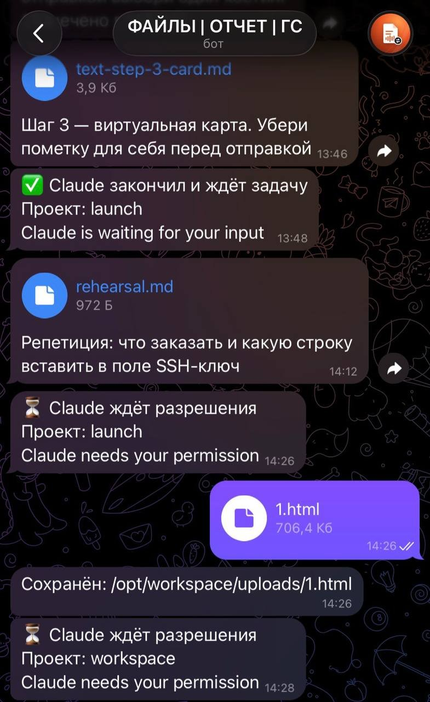
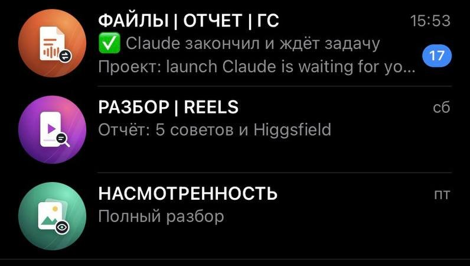
🫰 Мой пример. Приложению для семейного бюджета не хватало нужных мне функций. Мы с Claude собрали своё — на подписке Claude Pro, без доплат.
🤫 И эту инструкцию тоже собрал Claude по моим указаниям.
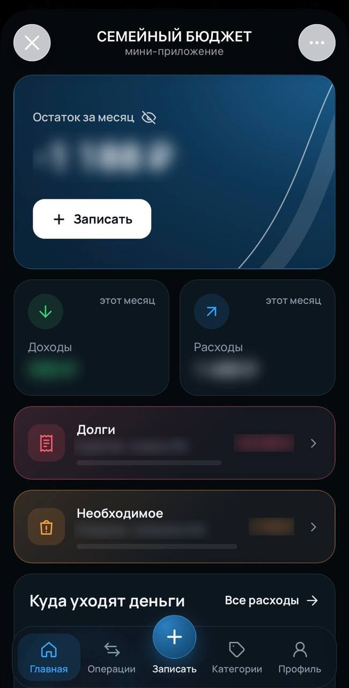
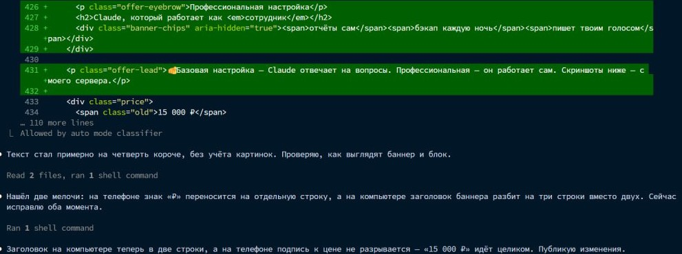
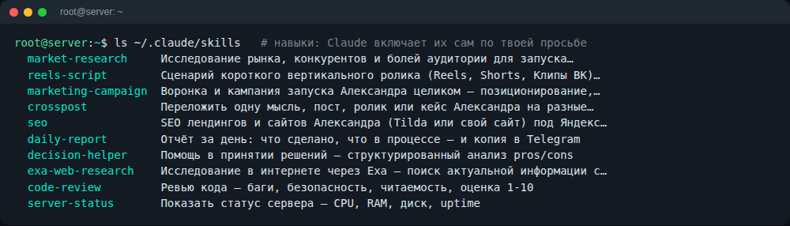
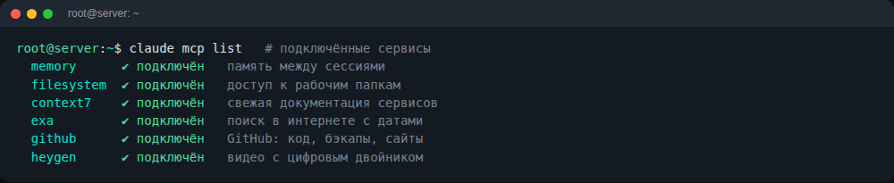
❗️ Подписку Claude и сервер ты оплачиваешь сам, как и раньше. Автоотчёты тратят лимиты Claude — подскажу, если тарифа не хватит.
Напиши мне в Telegram слово ПРОФИ — расскажу, как всё пройдёт →